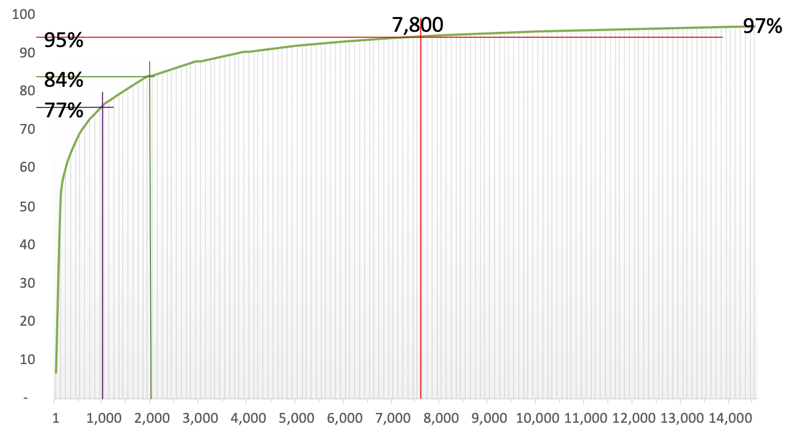

There is a very strong connection between the size of a learner's vocabulary and their comprehension. For this reason, a primary goal of the language class is to increase learners' vocabularies (counted in word families) as quickly as possible. So the main questions are which words to treat and how to teach/learn them. In this section, I'll focus on the issue of deciding which words to treat.
A crucial concept from economics that most English teachers fail to grasp is the idea of opportunity cost. Every effort that teachers and learners make to learn a particular word is a missed opportunity to learn other words. When teachers and learners compile lists of words they need to learn, they are implicitly assigning a value to those words. They are saying that those words are more valuable to them than the other words they might have chosen to learn. Essentially, they are saying that the opportunity cost of learning those words is less than the opportunity cost of learning other words.
One way of thinking about opportunity cost is to imagine a spectrum of words, with the most valuable words at one end and the least valuable words at the other. The most valuable words are the ones that learners are most likely to encounter in their daily lives and that are most likely to be useful to them. The least valuable words are the ones that are least likely to be encountered in daily life and that are least likely to be useful.
Here's a concrete example: If you treat a word like humble, thinking, "well, perhaps it's not the most valuable, but it may be useful at some later time" (or even at one specific imminent but atypical time), you are foregoing the chance to teach a word like potential, which is roughly 7 times more frequent (and thus, roughly 7 times more useful). That may not sound like a big difference to you, but there are roughly 4,400 words that are less frequent than humble and more frequent than potential, about any one of which you could also say, "well, perhaps it will be useful to them later at some point." Most of those 4,400 words are far more likely to be useful to your learners than humble. Moreover, you have no hope of teaching even 50% of them. You simply don't have time.
Time with your learners is precious, and spending it teaching low-frequency words like humble robs students of the opportunity to learn more useful words. This is the opportunity cost of teaching low-frequency vocabulary. Don't impose it on your students. Respect their study time.
Most people way underestimate the percentage of words (tokens) that you need to know in a text in order to be able to read it comfortably. For example, if you know 80% of the words in a text, that sounds like a lot (80% on a test is an "A" after all). Here are three texts in which you – an expert user of English, unlike your students – know 80%, 90%, or 95% of the words.
How much can you understand? How much does the lack of vocabulary knowledge slow you down?
*Note that the unfamiliar vocabulary is unfamiliar because it's not real. Jalbans, for instance, isn't an English word. The non-words are there to provide you with a simulation of how it would be to know fewer words.
Here's a different way to experience something similar without the non-words.
So, now what percentage of a texts tokens do you think you'd need to know before you could read with your regular ease and fluency? Research suggests that about 98% is the level at which students can read comfortably (Hu & Nation, 2000). But, for typical reading like newspapers, books, and emails, that means you need to know a lot of words, as the graph below demonstrates.
In the graph, the x asis is the number of word families and the y axis says how much cumulative coverage of a typical text you get if you know that many words. For example, it shows that, if you know 1,000 word families, you'll only know about 77% of the words you're reading. And, sadly, learning another 1,000 words only increase your coverage by about 7%. at 7,800 words, it looks like you still haven't reached your target. But there's reason for hope.

For one thing, most texts have proper nouns, names of people, cities, companies, etc. These don't have to be learned, and they often make up about 4% of the text. In other words, with about 7,800 words, learners basically know 100% of words in a typical text.
Another reason for optimism is that most conversations use far fewer words than printed texts, so with 2,000 words under their belt, learners will know most words in typical conversation.
A final reason is that certain genres have particular sub-groups of words that are very common. For example, if you know 2,000 basic words plus the 570 words of the Academic Word list, that gets you coverage of about 95% of printed academic English.
Now, think about humble and potential again. Humble is about half way between 5,000 and 6,000 on the x axis. Look at how flat the curve is there. Each new word hardly adds any coverage of the text. But potential is at about 1,000 on the x axis. There, the curve is still rising fast. Each new word makes a big difference. Each new word really counts.
Teach your learners words that count.
Most people are surprised at how quickly the frequencies of words drops off. Consider the following table.
|
Word family |
Rank |
Frequency per million words |
|
the |
1 |
60,800 |
|
you |
10 |
12,800 |
|
such |
100 |
900 |
|
purchase |
1,000 |
90 |
|
negotiate |
2,000 |
35 |
Note that any word, phrase, expression, or idiom that appears less frequently than 20 times per million words is (for various practical and theoretical reasons) a "low frequency item", and teachers and students should probably not waste class time focusing on it.
Teach your learners words that count.
References
Hu, M. H., & Nation, P. (2000). Unknown vocabulary density and reading comprehension. Reading in a Foreign Language, 13(1), 403–30.
How many words are there in the English language? There is no single sensible answer to this question. It's impossible to count the number of words in a language, because it's so hard to decide what actually counts as a word. Is dog one word, or two (a noun meaning 'a kind of animal', and a verb meaning 'to follow persistently')? If we count it as two, then do we count inflections separately too (e.g. dogs = plural noun, dogs = present tense of the verb). Is dog-tired a word, or just two other words joined together? Is hot dog really two words, since it might also be written as hot-dog or even hotdog?
It's also difficult to decide what counts as 'English'. What about medical and scientific terms? Latin words used in law, French words used in cooking, German words used in academic writing, Japanese words used in martial arts? Do you count Scots dialect? Teenage slang? Abbreviations?
The Second Edition of the 20-volume Oxford English Dictionary, published in 1989, contains full entries for 171,476 words in current use, and 47,156 obsolete words. To this may be added around 9,500 derivative words included as subentries. Over half of these words are nouns, about a quarter adjectives, and about a seventh verbs; the rest is made up of exclamations, conjunctions, prepositions, suffixes, etc. And these figures don't take account of entries with senses for different word classes (such as noun and adjective).
This suggests that there are, at the very least, a quarter of a million distinct English words, excluding inflections, and words from technical and regional vocabulary not covered by the OED, or words not yet added to the published dictionary, of which perhaps 20 per cent are no longer in current use. If distinct senses were counted, the total would probably approach three quarters of a million.
For the same reasons expressed above, it's hard to say how many words students will know at each level. To this, we add the confusion of Spanish-speaking students, for instance, who come to English already knowing a lot of vocabulary from their L1 and Vietnamese students, for instance, whose L1 shares almost no vocabulary with English. Nevertheless, the following chart should give you some idea of how many words are known at various levels.
The y-axis shows number of lexemes. The labels on the bars are word families.